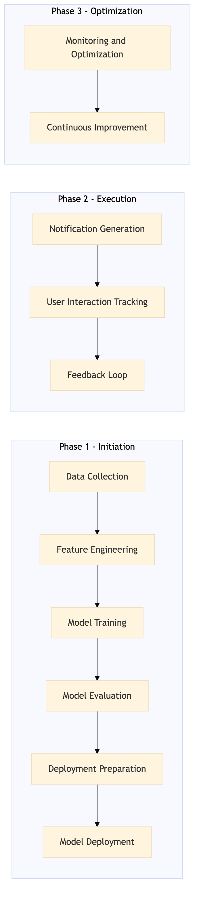

This process document outlines the steps for implementing push notification and email personalization across OTA and TMC systems to enhance customer experience.
| Trigger | Customer behavior data, such as booking history, preferences, and engagement metrics, triggers this process. |
| Outcome | Customers receive personalized push notifications and emails that are relevant to their travel needs and preferences, leading to increased satisfaction and loyalty. |
| Systems | Snowflake AWS SageMaker Kafka Salesforce Tableau |

Click to enlarge
| Step | Name & Pain Point | Role | System | Input | Output | KPI | Flags |
|---|---|---|---|---|---|---|---|
| 1.1 | Data Collection Handling large volumes of data efficiently | Data Analyst | Snowflake | Customer behavior data from various systems (Expedia Open World, Partner Central, etc.) | Aggregated customer profile data | Data collection accuracy rate > 95% | ⚠ Exception |
| 1.2 | Feature Engineering Balancing feature relevance and computational efficiency | Machine Learning Engineer | AWS SageMaker | Aggregated customer profile data | Personalization features (e.g., travel preferences, booking history) | Feature extraction accuracy > 85% | ⚠ Exception |
| 1.3 | Model Training Overfitting or underfitting the model | Machine Learning Engineer | AWS SageMaker | Personalization features | Trained personalization model | Model accuracy > 80% | ◆ Decision |
| 1.4 | Model Evaluation Ensuring unbiased evaluation | Data Scientist | AWS SageMaker | Trained personalization model | Evaluation report | A/B test conversion rate improvement > 5% | ◆ Decision |
| 1.5 | Deployment Preparation Integration with existing systems | DevOps Engineer | Kafka, Salesforce | Evaluation report | Deployment plan | Deployment success rate > 90% | ⚠ Exception |
| 1.6 | Model Deployment Minimizing downtime during deployment | DevOps Engineer | Kafka, Salesforce | Deployment plan | Deployed personalization model | System uptime > 99% | ⚠ Exception |
| 1.7 | Notification Generation Handling high notification volumes | Backend Developer | Kafka, Salesforce | Deployed personalization model | Personalized push notifications and emails | Notification delivery rate > 95% | ⚠ Exception |
| 1.8 | User Interaction Tracking Measuring user engagement accurately | Data Analyst | Snowflake, Tableau | Personalized push notifications and emails | Interaction metrics | Click-through rate > 20% | ◆ Decision |
| 1.9 | Feedback Loop Continuous improvement of personalization | Data Scientist, Product Manager | Tableau, Salesforce | Interaction metrics | Personalization model updates | Model performance improvement > 5% per quarter | ◆ Decision |
| 1.10 | Monitoring and Optimization Real-time monitoring of system performance | DevOps Engineer, Data Analyst | Kafka, Snowflake, Tableau | Personalized push notifications and emails | Optimized notification strategies | Customer satisfaction score > 85% | ⚠ Exception |